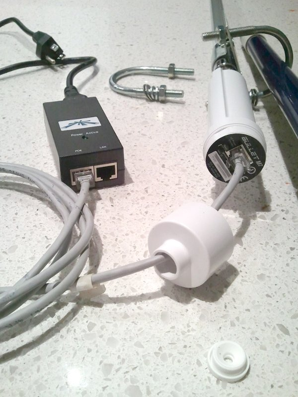
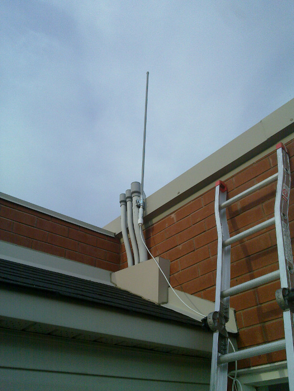

Réseau Libre - un Mesh à Montréal
C'est quoi?
Réseau Libre est un réseau IP dans la longue tradition des réseaux mesh qui existent ailleurs dans le monde, donc:
- indépendant
- local
- décentralisé
- non-commercial
Pourquoi?
- contrer le contrôle accru des réseaux par les grandes corporations
- rapatriement des services à la localité -> Freedom Box
- services d'urgence
- parce que ce qu'on peut
- pas nécessairement d'accès internet
Qui et où?
- groupe de ~20 bénévoles, ~70 inscrits sur la mailing list
- surtout à Montréal, mais participants à Pointe-Claire, Laval, Ahuntsic et rive-sud
- mesh actifs à Verdun et Rosemont
- ~30 nodes actifs, incluant point d'accès
- moins d'un an
Comment ça marche? technique 1
- réseaux sans fil "ad-hoc" 802.11n
- routage décentralisé avec Babel (anciennement BATMAN) - similaire à OSLR
- petites machines Ubiquity, TP-Link ou autre
- plein d'antennes sur les toits
En photos




Comment ça marche? technique 2
- deux niveaux: relais et acces
- relais: ad-hoc, babel, pas de services aux néophytes
- accès: "managed", point d'accès au mesh, possiblement au réseau
- allocation IP: first come first serve
- utilisation poussée de IPv6
- point d'accès enregistrés sur le wiki, créé une carte
- wiki décentralisé et redondant basé sur git (Ikiwiki)
- services actuels: "doodle", wikipedia, OSM, torrents, etc
Comment ça marche? politiques
- politiques établies par consensus des opérateurs
- liste de discussion fonctionne par proposition
- logiciel libre
- Picopeer agreement (Free Transit, Open Communication, No Warranty, Terms of Use)
- FNF 5 freedoms...
5 libertés
Le réseau libre suit les principes de la Free Network Foundation:
- Liberté 0) La liberté de participer au réseau.
- Liberté 1) La liberté de déterminer l'endroit où vos données sont stockées.
- Liberté 2) La liberté de déterminer avec qui ces données sont partagés.
- Liberté 3) La liberté de transmettre des données à ses pairs, sans interférence, interception ou censure.
- Liberté 4) La liberté de garder l'anonymat, ou de présenter une identité unique digne de confiance.
Joignez-vous à nous!
- accès au toit? une belle vue? on a besoin de vous!
- documentation
- design - logo?
- vidéo / photos
- http://wiki.reseaulibre.ca/participer